Mõisted
Kahe punkti vaheliseks kauguseks nimetakse neid punkte ühendava sirglõigu
pikkust. Kahe punkti vahelise kauguse leidmiseks kasutatakse Pythagorase teoreemi.
Kui on antud punktid A(x1,y1) ja B(x2,y2), siis nende punktide vaheline kaugus ehk
lõigu AB pikkus d = 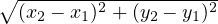. Kolmemõõtmelises ruumis tuleb
arvestada ka kolmanda koordinaadiga, seega punktide A(x1,y1,z1) ja B(x2,y2,z2)
vaheline kaugus d = 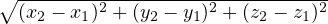.
Vektoriks nimetatakse suunaga varustatud lõiku ja seetõttu on vektoril
lisaks pikkusele ka suund. Vektorit tähistatakse, kas ühe tähega või lõigu
otspunkte tähistavate tähtedega, mille kohale on lisatud nool, näiteks
 ja
.
Kahetähelise tähistuse juures on esimeseks täheks vektori alguspunkt ja teiseks
täheks vektori lõpp-punkt.
ja
.
Kahetähelise tähistuse juures on esimeseks täheks vektori alguspunkt ja teiseks
täheks vektori lõpp-punkt.
Vektori pikkuseks nimetatakse vastava suunatud lõigu pikkust. Vektorite
 ja
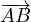 pikkusi tähistatakse
sümbolitega 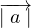
ja ∣ 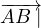 .
ja
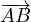 pikkusi tähistatakse
sümbolitega 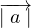
ja ∣ 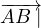 .
Nullvektoriks nimetatakse määramata suunaga vektorit, mille pikkus on null ja mida
tähistatakse 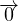 .
Ühikvektoriks nimetatakse vektorit, mille pikkus on üks ehk
 on ühikvektor,
kui ∣ 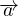 ∣ = 1.
on ühikvektor,
kui ∣ 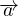 ∣ = 1.
Vektori vastandvektoriks nimetatakse vektorit, millel on antud vektoriga sama
siht ja pikkus, kuid vastupidine suund. Seotud vektoriks nimetatakse suunatud
lõiku ehk vektorit, millel on fikseeritud alguspunkt. Vabavektoriks nimetatakse
vektorit, mille alguspunkt ei ole fikseeritud.
Kaks vektorit on võrdsed, kui neil on sama siht, suund ja pikkus. Vektorid on
kollineaarsed ehk samasihilised, kui nad asuvad ühel ja samal sirgel või
paralleelsetel sirgetel.
Iga vektor  avaldub
kahemõõtmelises ruumis kujul
avaldub
kahemõõtmelises ruumis kujul  =
X ⋅
=
X ⋅  +
Y ⋅ 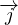 ,
kus 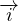 ja
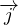 on
koordinaattelgede suunalised ühikvektorid (pikkusega 1). Arve X ja Y nimetatakse
vektori
+
Y ⋅ 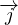 ,
kus 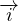 ja
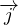 on
koordinaattelgede suunalised ühikvektorid (pikkusega 1). Arve X ja Y nimetatakse
vektori  koordinaatideks ühikvektorite poolt moodustatud vektorbaasi suhtes ja koordinaate tähistatakse
koordinaatideks ühikvektorite poolt moodustatud vektorbaasi suhtes ja koordinaate tähistatakse
 = (X;Y ).
= (X;Y ).
Tehted vektoritega
Vektoreid saab liita, kui liita vektorite vastavad koordinaadid. Vektori vastandvektori
koordinaadid on võrdsed vektori vastavate koordinaatide vastandarvudega.
Vektoreid saab lahutada, kui lahutamine asendada vektori vastandvektori
liitmisega. Vektori korrutamine arvuga k tähendab vastavate koordinaatide
korrutamist arvuga k ning suurendab vektori pikkust k korda ehk kui on vektor
 ja arv k, siis nende korrutis
on k
ja arv k, siis nende korrutis
on k  ja korrutise teel
saadud vektori pikkus ∣k
ja korrutise teel
saadud vektori pikkus ∣k  ∣ =
∣k∣⋅∣ 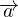 ∣.
∣ =
∣k∣⋅∣ 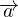 ∣.
Lõigu keskpunkti koordinaatide leidmiseks tuleb leida lõigu otspunktide
vastavate koordinaatide aritmeetilised keskmised. Kahemõõtmelise ruumi korral
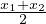 ja 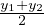.
Vektorite omadusi:
 +
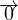 =
+
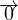 =

- 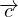 -
 =
=
 +
(-
+
(- )
)
- liitmine on assotsiatiivne (
 +
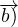 +
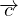 =
+
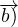 +
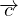 =
 +
(
+
( +
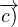
+
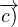
- liitmine on kommutatiivne
 +
+
 =
=
 +
+

- arvuga korrutamine on assotsiatiivne (km)
 =
k(m
=
k(m )
)
- distributiivsus arvude liitmise suhtes (k+m)
 =
k
=
k +
m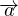
+
m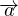
- distributiivsus vektorite liitmise suhtes k(
 +
+
 ) =
k
) =
k +
k
+
k
Skalaarkorrutis, ristseis
Vektorite  ja
ja  vaheliseks nurgaks nimetatakse nurka nende vektorite vahel, kui need vektorid
algavad samast alguspunktist.
vaheliseks nurgaks nimetatakse nurka nende vektorite vahel, kui need vektorid
algavad samast alguspunktist.
Vektorite  ja
ja  skalaarkorrutiseks nimetatakse nende vektorite pikkuste ja nende vahelise nurga α koosinuse
korrutist ehk
skalaarkorrutiseks nimetatakse nende vektorite pikkuste ja nende vahelise nurga α koosinuse
korrutist ehk  ⋅
⋅
 =
∣
=
∣  ∣⋅
∣ 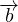 ∣cosα.
Kusjuures vektorite vaheline nurk α on määratud vahemikus 00 ≤ α ≤ 180∘. Kui
∣⋅
∣ 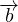 ∣cosα.
Kusjuures vektorite vaheline nurk α on määratud vahemikus 00 ≤ α ≤ 180∘. Kui
 ja
ja
 ei ole
nullvektorid, siis 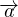 ⋅
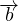 = 0 tähistab seda, et
vektorid on risti ehk
ei ole
nullvektorid, siis 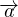 ⋅
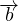 = 0 tähistab seda, et
vektorid on risti ehk  ⊥
⊥
 .
.
Skalaarkorrutise omadusi:
- kommutatiivsus
 ⋅
⋅
 =
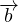 ⋅
=
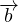 ⋅

- distributiivsus
 ⋅
(
⋅
( +
+
 ) =
) =
 ⋅
⋅
 +
+
 ⋅
⋅

- arvuga korrutamine on assotsiatiivne (k⋅
 )⋅
)⋅
 =
k⋅(
=
k⋅( ⋅
⋅
 )
)
 ⋅
⋅
 =
0
=
0
- 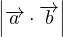≤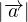⋅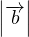
 ⋅
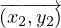 =
x1 ⋅ x2 + y1 ⋅ y2
⋅
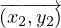 =
x1 ⋅ x2 + y1 ⋅ y2
 ⋅
⋅
 =
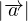2
=
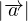2
- kui
 ⋅
⋅
 =
0 ja
=
0 ja  ≠0,
≠0,  ≠0,
siis
≠0,
siis  ⊥
⊥

Sirge võrrand
- sirge võrrand tõusu ja algordinaadi järgi: y = mx+b, kus b on algordinaat
ja m = tanα on sirge tõus.
- sirge võrrand ühe punkti ja tõusu järgi: y - y1 = m(x - x1)
- sirge võrrand kahe punkti järgi: 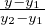 = 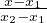
- sirge võrrand telglõikude järgi: + 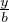 = 1, kus a ja b on sirge telglõigud
- sirge üldvõrrand: Ax + By + C = 0, kui A;B;C on konstandid
Ringjoone võrrand
Ringjoone võrrand ringjoone jaoks, mille keskpunkt asub nullpunktis ja mille
raadiuseks on R:

Kui ringjoone keskpunkt asub punktis (a,b), siis on ringjoone võrrandiks:
g
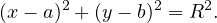
Hüperbooli võrrand
Hüperbooliks nimetatakse tasandi punktide hulka, mille kauguste vahe
kahest fikseeritud punktist ehk fookustest F1,F2 on absoluutväärtustelt
konstantne, väiksem nende punktide F1,F2 vahelisest kaugusest ja nullist erinev.
Hüperbooli võrrand on
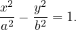
Parabooli võrrand
Parabooliks nimetatakse tasandilist joont, mille punktid asuvad võrdsel kaugusel
fikseeritud punktist ehk fookusest ja juhtjoonest. Parabooli võrrand esitub kujul
y2 = 2px, kus p on fookuse kaugus juhtjoonest. Seda nimetatakse parabooli
kanooniliseks võrrandiks.
Joonte lõikepunktid
Kahe sirge lõikumispunkti võib leida nii graafikult kui ka arvutuslikult, aga
arvutuslik meetod annab täpse tulemuse.
Arvutusliku meetodi järgi tuleb koostada sirge võrranditest võrrandisüsteem ja see
ära lahendada. Kui süsteemil on lõpmata palju lahendeid, siis sirged ühtivad ehk neil
on sama sirge võrrand. Kui süsteemid puuduvad lahendid, siis sirged on paralleelsed
ja ei lõiku.
Graafilist meetodit kasutades tuleb sirged kõigepealt joonestada ja siis leida jooniselt
nende lõikumispunkti koordinaadid.